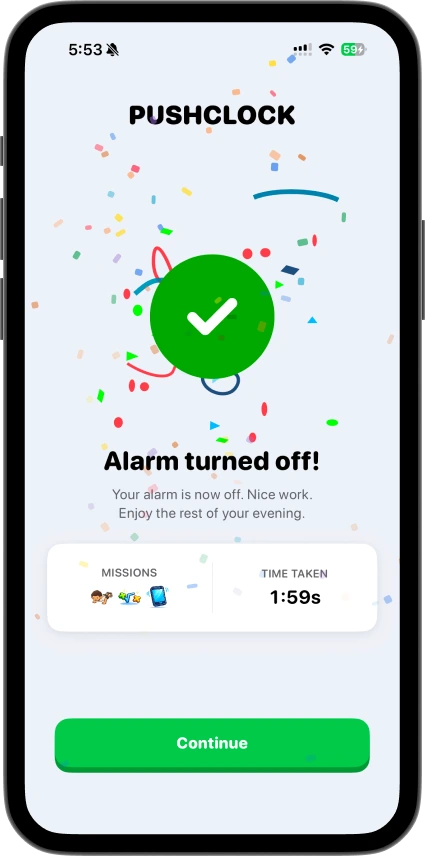

把起床做成一条闭环——我用 PushClock 串起了晨练、工作和打卡
以前闹钟响了按掉再躺，迟到是家常便饭。现在我把 PushClock 嵌进了一套从设闹钟到 Wake Squad 打卡的完整流程里，省了手动复制连续天数的麻烦，也让晨练不再是"想起来才做"的事。
我每周要做的事，以前要三步
说起来挺简单——我每天早上要在 7:00 前起床，做 20 个深蹲，然后打开电脑写东西。听起来不难，但坚持下来的人都懂：起床这件事，最大的敌人不是没动力，是那五秒钟的模糊决策。
旧流程是这样的：睡前用系统闹钟设 7:00，闹钟响了，我在半睡状态下摸到手机，按掉贪睡或直接关掉，翻个身继续躺。等真正起来的时候可能已经 8:30 了，深蹲没做，工作推迟，还要在脑子里补一句"明天一定"。
更烦的是打卡这件事。我有几个朋友想一起早起互相监督，以前是各自在群里发一句"起了"，没人知道你是不是起床了半小时才发的。群里还总有人漏发，聊着聊着就断了，到月底也没个统计。
还有个习惯追踪的笔记本，每周日晚上要手动把周一到周五的连续天数抄进去，有时候记混了、有时候忘了写，那本东西到现在也只写了三页。
总结一下以前的起床链条：闹钟——睡觉——迟到——手动补记录——大概率中途放弃。四步里有三步靠意志力撑着，能坚持三周就算不错了。
把 PushClock 插进流程的哪一环
我是怎么把它嵌进去的？pushclock官网上把这套机制讲得很清楚，核心就一句话：在"设闹钟"的同时把"必须完成的任务"绑上去，不让半睡的大脑有退路。
整条新流程是这样的：
第一步，睡前设闹钟时同时选任务。 这一步是在意识清醒的时候完成的——我知道明天要做什么任务。安装包从官方下载拿，PushClock 让我在设闹钟的时候就把任务选好。现在我固定用"20 个深蹲"，难度调到最低，先保证能完成再说。闹钟设好，PushClock 还可以开个随机铃声模式，从自然声、机械声里各选几个，每次闹钟响随机挑一个。
第二步，闹钟响起，没别的选择。 屏幕上只有两行字："完成 20 个深蹲才能停闹钟"。没有贪睡按钮、没有"稍后再响"。默认音量比系统闹钟大，还带振动。我试过把闹钟藏在枕头底下，结果振动把我整个人都震醒了，还是得爬起来面对摄像头。

第三步，完成任务，闹钟自动停。 PushClock 用设备端的 ML 模型追踪深蹲动作姿势——不是挥挥手就能混过去，蹲下去再站起来才算一个。完成 20 个，闹钟才会停，Streaks 自动+1，历史记录里记上今天的时间。
第四步，Wake Squad 里自动打卡。 我注册了 PushClock 账号，拉了五个朋友进一个 Wake Squad 群组，用邀请链接加的，不对外公开。群组里只显示"完成/未完成"和任务类型标签，不显示具体几点起的、深蹲做了多少——隐私没暴露，但群里一眼就能看见今天谁掉队了。连续天数大家都在涨，你断了会特别显眼。
第五步，连续天数自动同步。 以前每周日晚上手动抄的习惯追踪，现在 PushClock 的本地 Streaks 自动记，换手机也不会丢。虽然我还没找到能直接导入 Notion 的快捷方式，但至少省了每周日那半小时的手动抄写。
流程里最容易断链的两个环节
这套流程跑了三周，中间确实出了点小问题。讲两个最容易断的环节：
第一个环节：深蹲计数不准。 刚开始几天 PushClock 漏数，我明明做了 20 个它只认了 17 个，急得我在被窝里又多蹲了几个。后来才发现是摄像头角度的问题——我躺在床上的时候摄像头只能拍到上半身，蹲下去的时候手臂挡住了画面。解决办法很简单：闹钟响了之后先把手机放在床头支架上，角度调低点对着自己的全身，再开始做动作。
第二个环节：冬天或雨天的任务替代。 深蹲还好，不用出门。但有时候我想换个任务试试，比如摸摸草。冬天早上零下十几度，走到阳台拍天空照片过得了关——PushClock 的户外任务只要画面里有天空区域就算，不用真的下楼摸草。下雨天换室内任务，比如整理床铺、找物品拍照，灵活切换就行。PushClock 免费版能用基础的拍照任务，进阶的自定义物品需要 Pro 订阅，但我到现在还没用到那些功能——想了解完整任务列表和参数配置的话，pushclock文档里列得很全。

效果和边界
跑了三周，说几个具体的变化，不是空话：
- 以前按掉闹钟再躺的次数：每周大约 3~4 次。现在：0 次。因为没地方按——只能完成任务。
- 手动抄写连续天数的时间：每周 30 分钟。现在：0 分钟。PushClock 自动记，Wake Squad 群里也能看。
- 晨练完成率：以前大约 50%，靠意志力。现在 95%——偶尔实在太累会推迟半小时，但不会取消。
但这套流程也有边界，什么时候不划算？
如果你完全不喜欢社交，Wake Squad 可以关掉，PushClock 的核心闹钟功能不需要账号也能用，数据只存在本地。如果你的作息本身就很规律，可能不需要这么重的工具——一个普通闹钟加一点自我管理就够了。还有人跟我说他可以把俯卧撑次数调到 5 个，做完直接躺回去，还是没解决根问题。这时候 PushClock 也救不了你，得自己想清楚为什么要早起。
对我来说最关键的一点是：我不再在半睡状态下做决定了。设闹钟的时候就已经把任务绑好了，闹钟响的时候只有一条路能走——爬起来。这条路本身就是最好的醒神程序，比咖啡还管用。源文件我做了三份备份，GitHub是主仓，国内访问的话 Gitee 和 GitCode 上也同步了完整的项目目录。